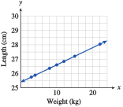

Exercises 1.12 Homework 1.5
¶In Problems 1–10,
Write each equation in slope-intercept form.
State the slope and \(y\)-intercept of the line.
1.
\(3x + 2y = 1\)
\(y = \dfrac{1}{2}- \dfrac{3}{2}x\)
Slope \(\dfrac{-3}{2}\text{,}\) \(y\)-intercept \(\dfrac{1}{2} \)
2.
\(5x - 4y = 0\)
3.
\(\dfrac{1}{4}x + \dfrac{3}{2}y = \dfrac{1}{6}\)
\(y = \dfrac{1}{9}- \dfrac{1}{6}x\)
Slope \(\dfrac{-1}{6}\text{,}\) \(y\)-intercept \(\dfrac{1}{9} \)
4.
\(\dfrac{7}{6}x - \dfrac{2}{9}y = 3\)
5.
\(4.2x - 0.3y = 6.6\)
\(y = -22 + 14x\)
Slope \(14\text{,}\) \(y\)-intercept \(-22 \)
6.
\(0.8x + 0.004y = 0.24\)
7.
\(y + 29 = 0\)
\(y = -29\)
Slope \(0\text{,}\) \(y\)-intercept \(-29 \)
8.
\(y - 37 = 0\)
9.
\(250x + 150y = 2450\)
\(y =\dfrac{49}{3}-\dfrac{5}{3}x \)
Slope \(\dfrac{-5}{3}\text{,}\) \(y\)-intercept \(\dfrac{49}{3} \)
10.
\(80x - 360y = 6120\)
In Problems 11–14,
Sketch by hand the graph of the line with the given slope and \(y\)-intercept.
Write an equation for the line.
Find the \(x\)-intercept of the line.

15.
The point \((2, -1)\) lies on the graph of \(f (x) = -3x + b\text{.}\) Find \(b\text{.}\)
\(5\)
16.
The point \((-3, -8)\) lies on the graph of \(f (x) =\dfrac{2}{3} x + b\text{.}\) Find \(b\text{.}\)
17.
The point \((8, -5)\) lies on the graph of \(f(x) = mx - 3\text{.}\) Find \(m\text{.}\)
\(\dfrac{-1}{4} \)
18.
The point \((-5, -6)\) lies on the graph of \(f(x) = mx +2\text{.}\) Find \(m\text{.}\)
19.
Find the slope and intercepts of the line \(Ax + By = C\)
\(m =\dfrac{-A}{B}\text{,}\) \(x\)-intercept \(\left(\dfrac{C}{A},0\right) \text{,}\) \(y\)-intercept \(\left(0,\dfrac{C}{B}\right) \)
20.
Find the slope and intercepts of the line \(\dfrac{x}{a}+\dfrac{y}{b}=1 \)
In Problems 21–26,
Find a formula for the function whose graph is shown.
Say what the slope and the vertical intercept tell us about the problem.
21.
The graph shows the altitude, \(a\) (in feet), of a skier \(t\) minutes after getting on a ski lift.
\(a = 100 + 150t\)
The slope tells us that the skier's altitude is increasing at a rate of \(150\) feet per minute, the vertical intercept that the skier began at an altitude of \(200\) feet.
22.
The graph shows the distance, \(d\) (in meters), traveled by a train \(t\) seconds after it passes an observer.

23.
The graph shows the amount of garbage, \(G\) (in tons), that has been deposited at a dump site \(t\) years after new regulations go into effect.
\(G = 25 + 12.5t\)
The slope tells us that the garbage is increasing at a rate of \(12.5\) tons per year, the vertical intercept that the dump already had \(25\) tons (when the new regulations went into effect).
24.
The graph shows the number of barrels of oil, \(B\text{,}\) that has been pumped at a drill site \(t\) days after a new drill is installed.
25.
The graph shows the amount of money, \(M\) (in dollars), in Tammy’s bank account \(w\) weeks after she loses all sources of income.

\(M = 7000 - 400w\)
The slope tells us that Tammy's bank account is diminishing at a rate of $\(400\) per week, the vertical intercept that she had $\(7000\) (when she lost all sources of income).
26.
The graph shows the amount of emergency water, \(W\) (in liters), remaining in a southern California household \(t\) days after an earthquake.

27.
The formula \(F = \dfrac{9}{5}C + 32\) defines a function that converts the temperature in degrees Celsius to degrees Fahrenheit.
What is the Fahrenheit temperature when it is \(10\degree\) Celsius?
What is the Celsius temperature when it is \(-4\degree\) Fahrenheit?
Choose appropriate
WINDOWsettings and graph the equation \(y = \dfrac{9}{5}x + 32\text{.}\)Find the slope and explain its meaning for this problem.
Find the intercepts and explain their meanings for this problem.
\(50\degree\)F
\(-20\degree\)C

The slope, \(\frac{9}{5} = 1.8\text{,}\) tells us that Fahrenheit temperatures increase by \(1.8\degree\) for each increase of \(1\degree\) Celsius.
\(C\)-intercept \(\left(-17\frac{7}{9}, 0\right)\text{:}\) \(-17\frac{7}{9}\degree\) C is the same as \(0\degree\)F; \(F\)-intercept \((0, 32)\text{:}\) \(0\degree\)C is the same as \(32\degree\)F.
28.
If the temperature on the ground is \(70\degree\) Fahrenheit, the formula \(T = 70 - \dfrac{3}{820}h\) defines a function that gives the temperature at an altitude of \(h\) feet.
What is the temperature at an altitude of \(4100\) feet?
At what altitude is the temperature \(34\degree\) Fahrenheit?
Choose appropriate
WINDOWsettings and graph the equation \(y = 70- \dfrac{3}{820}x\text{.}\)Find the slope and explain its meaning for this problem.
Find the intercepts and explain their meanings for this problem.
29.
In England, oven cooking temperatures are often given as Gas Marks rather than degrees Fahrenheit. The table shows the equivalent oven temperatures for various Gas Marks.
| Gas Mark | \(3\) | \(5\) | \(7\) | \(9\) |
| Degrees (F) | \(325\) | \(375\) | \(425\) | \(475\) |
Plot the data and draw a line through the data points.
Calculate the slope of your line. Estimate the \(y\)-intercept from the graph.
Find an equation that gives the temperature in degrees Fahrenheit in terms of the Gas Mark.

\(m = 25, ~b = 250\)
\(y = 250 + 25x\)
30.
European shoe sizes are scaled differently than American shoe sizes. The table shows the European equivalents for various American shoe sizes.
| American shoe size | \(5.5\) | \(6.5\) | \(7.5\) | \(8.5\) |
| European shoe size | \(37\) | \(38\) | \(39\) | \(40\) |
Plot the data and draw a line through the data points.
Calculate the slope of your line. Estimate the \(y\)-intercept from the graph.
Find an equation that gives the European shoe size in terms of American shoe size.
31.
A spring is suspended from the ceiling. The table shows the length of the spring in centimeters as it is stretched by hanging various weights from it.
| Weight, kg | \(3\) | \(4\) | \(8\) | \(10\) | \(12\) | \(15\) | \(22\) |
| Length, cm | \(25.76\) | \(25.88\) | \(26.36\) | \(26.6\) | \(26.84\) | \(27.2\) | \(28.04\) |
Plot the data on graph paper and draw a straight line through the points. Estimate the \(y\)-intercept of your graph.
Find an equation for the line.
If the spring is stretched to \(27.56\) cm, how heavy is the attached weight?
- 
\(y = 0.12x + 25.4\)
\(18\) kg
32.
The table shows the amount of ammonium chloride salt, in grams, that can be dissolved in \(100\) grams of water at different temperatures.
| Temperature, \(\degree\)C | \(10\) | \(12\) | \(15\) | \(21\) | \(25\) | \(40\) | \(52\) |
| Grams of salt | \(33\) | \(34\) | \(35.5\) | \(38.5\) | \(40.5\) | \(48\) | \(54\) |
Plot the data on graph paper and draw a straight line through the points. Estimate the \(y\)-intercept of your graph.
Find an equation for the line.
At what temperature will \(46\) grams of salt dissolve?
In Problems 33–36,
Sketch by hand the graph of the line that passes through the given point and has the given slope.
Write an equation for the line in point-slope form.
Put your equation from part (b) into slope-intercept form.


For Problems 37–40,
Write an equation in point-slope form for the line that passes through the given point and has the given slope.
Put your equation from part (a) into slope-intercept form.
Use your graphing calculator to graph the line.


For Problems 41 and 42,
Find the slope of the line. (Note that not all the labeled points lie on the line.)
Find an equation for the line.
41.

\(m =\dfrac{2}{3}\)
\(y=\dfrac{-1}{3}+ \dfrac{2}{3}x\)
42.
For Problems 43 and 44, the equation of line \(l_1\) is \(y = q + px\text{,}\) and the equation of line \(l_2\) is \(y = v + tx\text{.}\)
-
Decide whether the coordinates of each labeled point are
a solution of \(y = q + px\text{,}\)
a solution of \(y = v + tx\text{,}\)
a solution of both equations, or
a solution of neither equation.
Find \(p\text{,}\) \(q\text{,}\) \(t\text{,}\) and \(v\text{.}\)
43.
\((-4, 4)\text{:}\) neither; \((0, 3)\text{:}\) \(y = px + q\text{;}\) \((3, 2)\text{:}\) both; \((2, 1)\text{:}\) neither; \((1,-2)\text{:}\) \(y = tx + v\)
\(p =\dfrac{-1}{3}\text{,}\) \(q = 3\text{,}\) \(t = 2\text{,}\) \(v = -4\)
44.
For Problems 45–50,
Estimate the slope and vertical intercept of each line. (Hint: To calculate the slope, find two points on the graph that lie on the intersection of grid lines.)
Using your estimates from (a), write an equation for the line.


51.
Write equations for three lines with slope \(m = \dfrac{3}{4}\text{.}\) (Many answers are possible.)
Graph all three lines in the same window. What do you notice about the lines?
\(y = \dfrac{3}{4}x\text{,}\) \(y = 1 + \dfrac{3}{4}x\text{,}\) \(y = -2.7 + \dfrac{3}{4}x\)
-

The lines are parallel.
52.
Write equations for three lines with slope \(m =0\text{.}\) (Many answers are possible.)
Graph all three lines in the same window. What do you notice about the lines?
In Problems 53–56, choose the correct graph for each equation. The scales on both axes are the same.
53.
\(y = \dfrac{3}{4}x + 2\)
\(y = \dfrac{-3}{4}x + 2\)
\(y = \dfrac{3}{4}x - 2 \)
\(y =\dfrac{-3}{4}x - 2\)

II
III
I
IV
54.
\(m\lt 0\text{,}\) \(b\gt 0\)
\(m\gt 1\text{,}\) \(b\lt 0\)
\(0\lt m\lt 1\text{,}\) \(b\lt 0\)
\(m\lt -1\text{,}\) \(b\lt 0 \)

55.
\(y = 1 + 2(x+3) \)
\(y = -1 + 2(x-3)\)
\(y = -1 + 2(x+3) \)
\(y = 1 + 2(x-3) \)

III
IV
II
I
56.
\(y = 2 - \dfrac{2}{3}(x - 3) \)
\(y = 2 - \dfrac{3}{2}(x + 3) \)
\(y = 2 + \dfrac{3}{2}(x - 3) \)
\(y = 2 + \dfrac{2}{3}(x + 3) \)

In Problems 57–60, find the slope of each line and the coordinates of one point on the line. (No calculation is necessary!)
61.
-
Draw a set of coordinate axes with a square grid (i.e., with units the same size in both directions). Sketch four lines through the point (0, 4) with the following slopes:
\begin{equation*} m = 3, ~~~ m = -3,~~~ m = \frac{1}{3}, ~~~ m =\frac{-1}{3} \end{equation*} What do you notice about these lines?

62.
-
Draw a set of coordinate axes with a square grid (see Problem 61). Sketch four lines through the point (0, -3) with the following slopes:
\begin{equation*} m = \frac{2}{5}, ~~~ m = \frac{-2}{5},~~~ m = \frac{5}{2}, ~~~ m =\frac{-5}{2} \end{equation*} What do you notice about these lines?
63.
The boiling point of water changes with altitude and is approximated by the formula
where \(B\) is in degrees and \(h\) is in feet. State the slope and vertical intercept of the graph, including units, and explain their meaning in this context.
\(m = -0.0018\) degree/foot, so the boiling point drops with altitude at a rate of \(0.0018\) degree per foot. \(b = 212\text{,}\) so the boiling point is \(212\degree\) at sea level (where the elevation \(h = 0\)).
64.
The height of a woman in centimeters is related to the length of her femur (in centimeters) by the formula
State the slope and the vertical intercept of the graph, including units, and explain their meaning in this context.